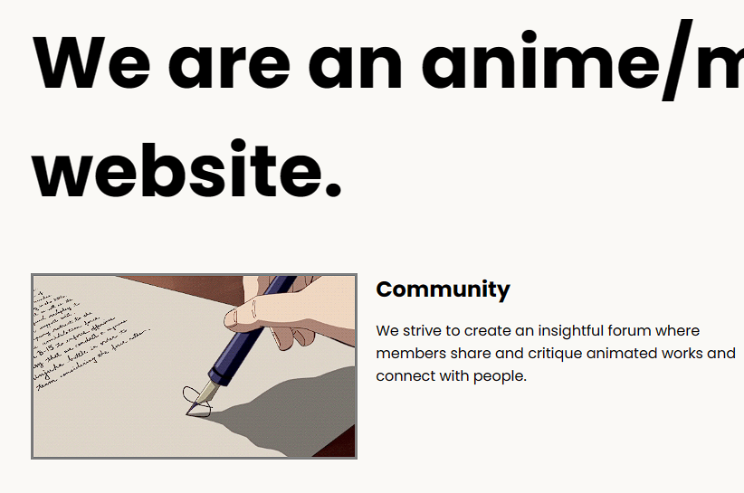
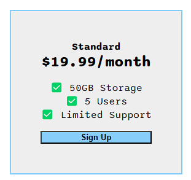
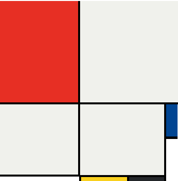

Anime Ranking

Page utilizing simple HTML to create a personalized listing of my favorite animes
Birthday Invite

As part of the 2023 Web Development Bootcamp with Dr. Angela Yu from the App Brewery, this website is the second installment of a 'mini-project' showcasing my gained knowledge of more HTML fundamentals. This page is where I "play" around with images and html lists.
Colors

Mini project utilizing basic CSS properties to beautify the page from abstract white design. This project focuses a lot on the CSS color scheme.
Anime Forum
Part of the Appbrewery's web development course; utilizes simple media queries and flexbox positioning to create a landing page for an anime forum website.
Flexbox Pricing
Utilizing Flexbox properties to create price boxes as seen in marketing schemes online.
Mondrian Grid
Recreation of mondrian works using CSS (mainly showcasing practicality of CSS grids.)